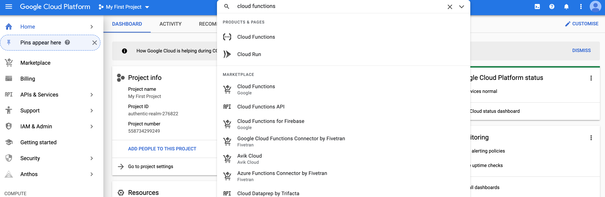
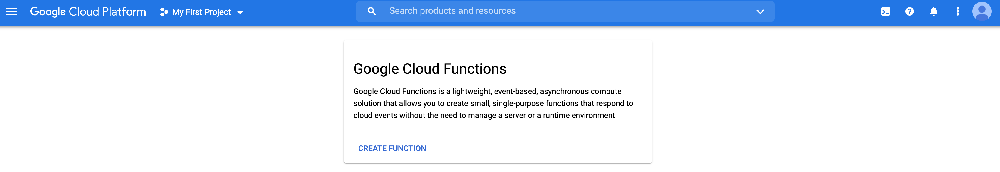
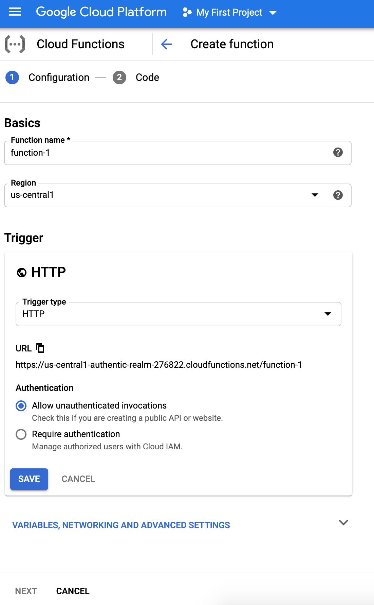
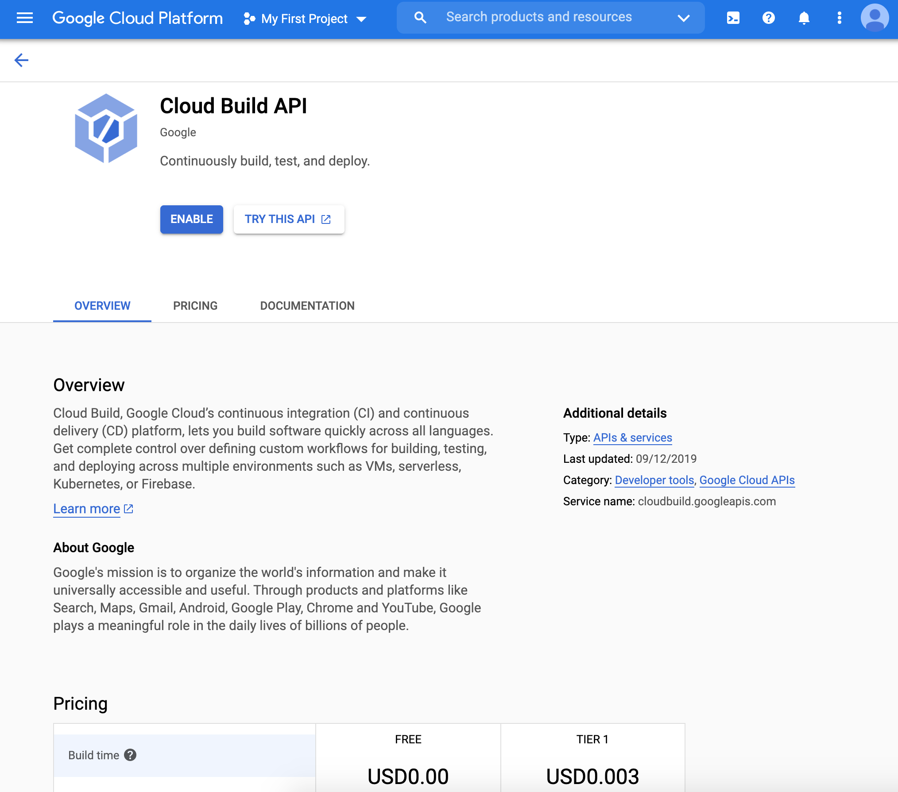
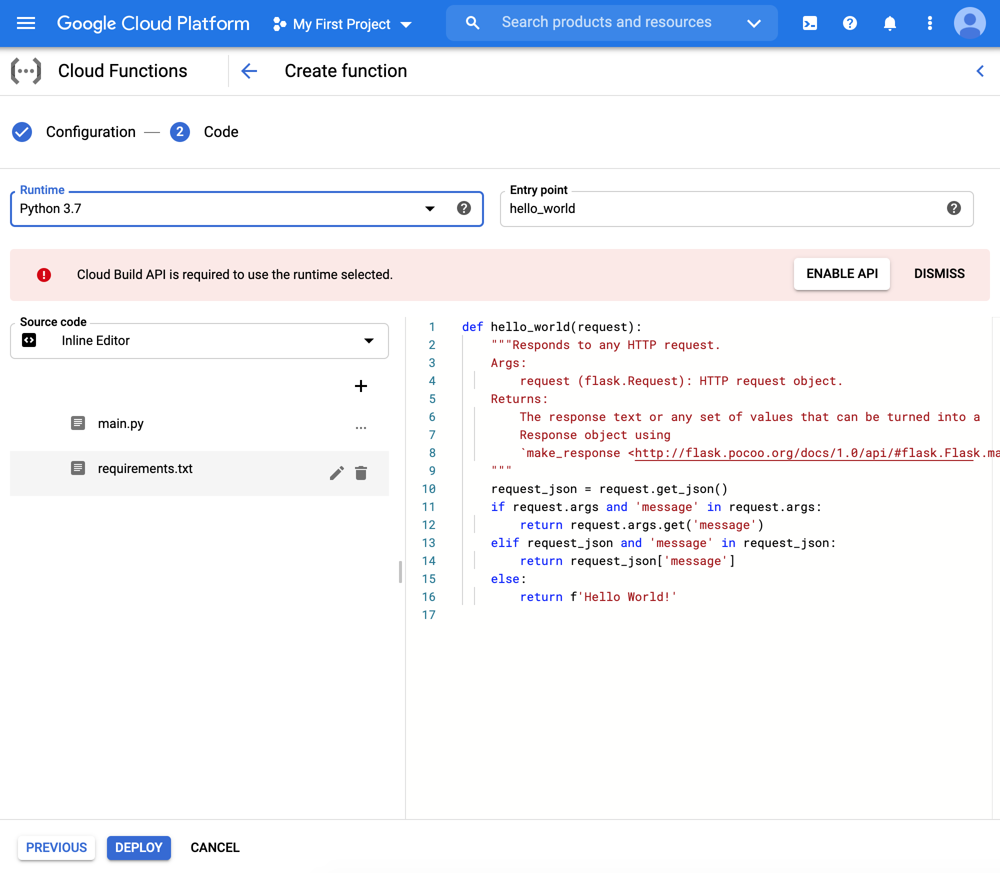
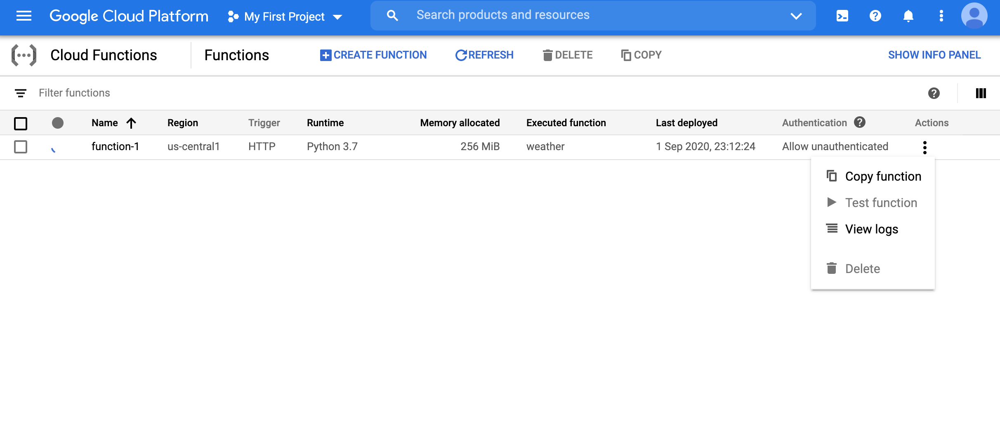
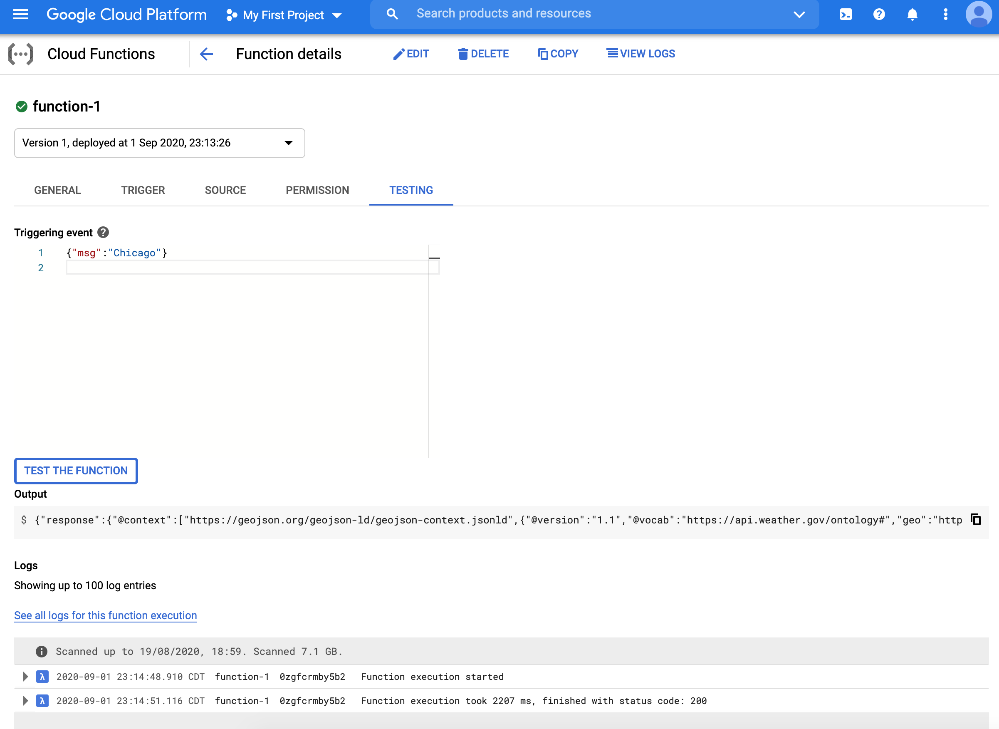
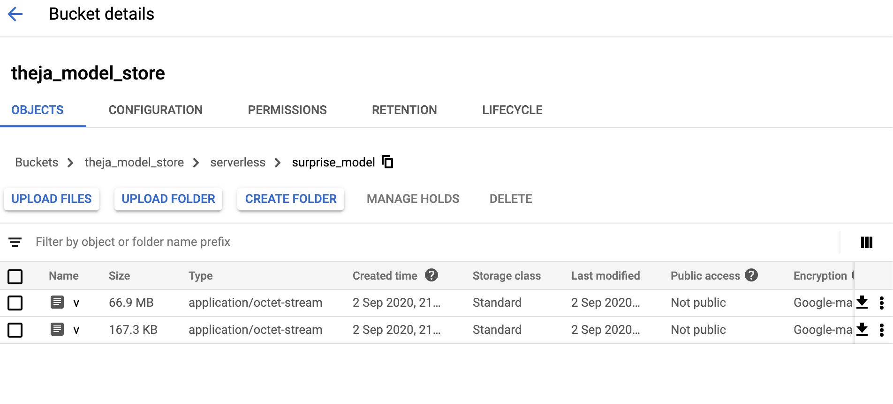
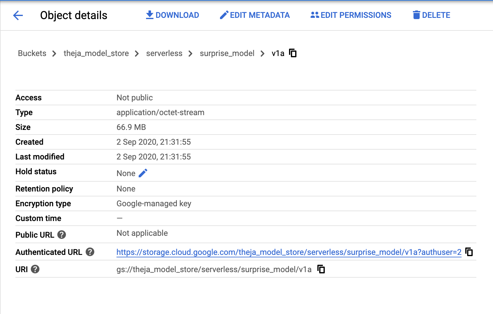

Cloud Functions
Intro
- Cloud Functions (CFs) are a solution from GCP for serverless deployments.
- Very little boilerplate beyond what we will write for simple offline model inference.
- In any such deployment, we need to be concerned about:
- where the model is stored (recall pickle and mlflow), and
- what python packages are available.
Empty Deployment
- We will set up triggers that will trigger our serving function (in particular, a HTTP request).
- We will specify the requirements needed for our python function to work
- The function we deploy here, similar to lecture 1, produces weather forecasts given a location.
Setting up using UI
Sign up with GCP if you haven’t already (typically you get a 300$ credit)
Get to the console and find the Cloud Function page.

- Go through the UI for creating a function.

- We will choose the HTTP trigger and unauthenticated access option.

- We may have to enable Cloud Build API

- Finally, we choose the Python environment. You can see two default example files (main.py and requirements.txt). We will be modifying these two.

Python Files and Requirements
We will specify the following requirements:
flask geopy requestsOur main file is the following:
def weather(request): from flask import jsonify from geopy.geocoders import Nominatim import requests data = {"success": False} #https://pypi.org/project/geopy/ geolocator = Nominatim(user_agent="cloud_function_weather_app") params = request.get_json() if "msg" in params: location = geolocator.geocode(str(params['msg'])) # https://www.weather.gov/documentation/services-web-api # Example query: https://api.weather.gov/points/39.7456,-97.0892 result1 = requests.get(f"https://api.weather.gov/points/{location.latitude},{location.longitude}") # Example query: https://api.weather.gov/gridpoints/TOP/31,80 result2 = requests.get(f"{result1.json()['properties']['forecast']}") data["response"] = result2.json() data["success"] = True return jsonify(data)Once the function is deployed, we can test the function (click actions on the far right in the dashboard)

- We can pass the JSON string
{"msg":"Chicago"}and see that we indeed get the JSON output for the weather of Chicago.

We can also access the function from the web endpoint
https://us-central1-authentic-realm-276822.cloudfunctions.net/function-1(you will have a different endpoint). Note that unlike previous times, the request to this endpoint is a JSON payload.Below is the screen-shot of querying the weather of Chicago using the
Postmantool. The way to use it is as follows:- Insert the URL of the API
- Se the method type to POST
- Navigate to body and choose
rawand then chooseJSONfrom the dropdown menu. - Now add the relevant parameters as a JSON string.

Finally, here is a query you can use from a Jupyter notebook.
import requests result = requests.post( "https://us-central1-authentic-realm-276822.cloudfunctions.net/function-1" ,json = { 'msg': 'Chicago' }) print(result.json()) #should match with https://forecast.weather.gov/MapClick.php?textField1=41.98&textField2=-87.9
Saving Model on the Cloud
For our original task of deploying a trained ML model, we need a way to read it from somewhere when the function is triggered.
One way is to dump the model onto Google Cloud Storage (GCS)
GCS is similar to the S3 (simple storage service) by AWS.
We will use the command line to dump our model onto the cloud.
GCP access via the commandline
First we need to install the Google Cloud SDK from https://cloud.google.com/sdk/docs/downloads-interactive
curl https://sdk.cloud.google.com | bash gcloud initThere are two types of accounts you can work with: a user account or a service account (see https://cloud.google.com/sdk/docs/authorizing?authuser=2).
Among others, [this page] gives a brief idea of why such an account is needed. In particular, we will create a service account (so that it can be used by an application programmatically anywhere) and store the encrypted credentials on disk for programmatic access through python. To do so, we run the following commands:
We create the service account and check that it is active by using this command:
gcloud iam service-accounts list.gcloud iam service-accounts create idsservice \ --description="IDS service account" \ --display-name="idsservice-displayed"We then assign a new role for this service account in the project. The account can be disabled using the command
gcloud iam service-accounts disable idsservice@authentic-realm-276822.iam.gserviceaccount.com(change idsservice and authentic-realm-276822 to your specific names).gcloud projects add-iam-policy-binding authentic-realm-276822 --member=serviceAccount:idsservice@authentic-realm-276822.iam.gserviceaccount.com --role=roles/ownerFinally, we can download the credentials
gcloud iam service-accounts keys create ~/idsservice.json \ --iam-account idsservice@authentic-realm-276822.iam.gserviceaccount.comOnce the credentials are downloaded, they can be programmatically accessed using python running on that machine. We just have to explore the location of the file:
export GOOGLE_APPLICATION_CREDENTIALS=/Users/theja/idsservice.json
Next we will install a python module to access GCS, so that we can write our model to the cloud:
pip install google-cloud-storageThe following code creates a bucket called
theja_model_storefrom google.cloud import storage bucket_name = "theja_model_store" storage_client = storage.Client() storage_client.create_bucket(bucket_name) for bucket in storage_client.list_buckets(): print(bucket.name)We can dump the model we used previous here using the following snippet
from google.cloud import storage bucket_name = "theja_model_store" storage_client = storage.Client() bucket = storage_client.get_bucket(bucket_name) blob = bucket.blob("serverless/surprise_model/v1a") blob.upload_from_filename("surprise_model") blob = bucket.blob("serverless/surprise_model/v1b") blob.upload_from_filename("movies.dat")

After running the above, the surprise package based recommendation model and the helper data file will be available at gs://theja_model_store/serverless/surprise_model/v1a and gs://theja_model_store/serverless/surprise_model/v1b as seen below.

We can either use the URIs above or use a programmatic way with the storage class. For example, here is the way to download the file v1b:
from google.cloud import storage
bucket_name = "theja_model_store"
storage_client = storage.Client()
bucket = storage_client.get_bucket(bucket_name)
blob = bucket.blob("serverless/surprise_model/v1b")
blob.download_to_filename("movies.dat.from_gcp")
We can diff it in Jupyter notebook itself using the expression !diff movies.dat movies.dat.from_gcp.
We will use this programmatic way of reading external data/model in the cloud function next.